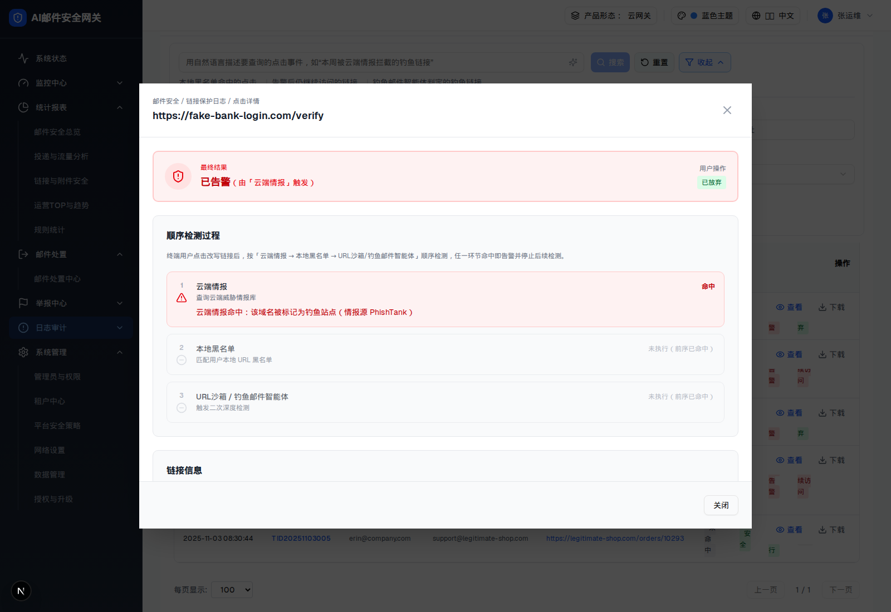

| 触发路径 | 层级0 → 列表行「查看」→ 居中 Modal（div.fixed.inset-0.z-50 + bg-black/70 遮罩，非 Radix Dialog） |
| 主文件 | index.html#c-3 |
最终结果
已告警（由「云端情报」触发）
用户操作
已放弃终端用户点击改写链接后，按「云端情报 → 本地黑名单 → URL沙箱/钓鱼邮件智能体」顺序检测，任一环节命中即告警并停止后续检测。
查询云端威胁情报库
云端情报命中：该域名被标记为钓鱼站点（情报源 PhishTank）
匹配用户本地 URL 黑名单
触发二次深度检测

| 态 | 配色 | 含义 |
|---|---|---|
| 命中 | 红 | 该环节判定为恶意/钓鱼/可疑 → 告警并停止后续检测 |
| 已检测 · 未命中 | 绿 | 该环节执行了但没命中，继续下一环节 |
| 未执行 | 灰 | 前序已命中，本环节根本没跑 |
命中环节额外展示命中说明（detail：情报类别 / 黑名单条目 / 引擎结论）；第三环节命中时显示实际引擎（URL沙箱 或 钓鱼邮件智能体）。
⚠ 0709 要求详情也要支持「跳过深度检测」态 —— demo 完全没有（第三环节被用户跳过时如何渲染，PRD 也没细化）。
| 比对项 | demo 实际 DOM | 提取的 HTML | 是否一致 |
|---|---|---|---|
| 根节点 | div.fixed.inset-0.z-50（自定义 Modal，非 Radix Dialog） | 同 | 一致 |
| 后代节点数 | 101 | 101 | 一致 |
| 分区 | 4（最终处置概览 / 顺序检测过程 / 链接信息 / 邮件与点击上下文） | 4 | 一致 |
| 时间线环节 | 3 | 3 | 一致 |
| 底部按钮 | 仅「关闭」 | 同 | 一致 |
| 「跳过深度检测」态 | 不存在 | 不包含 | 一致（0709 要求但未实现） |